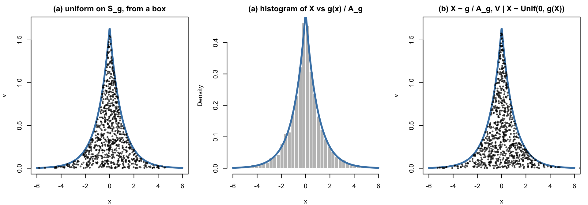
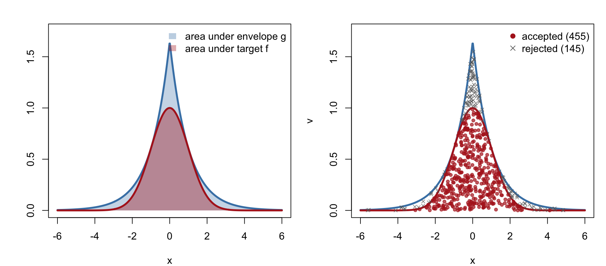
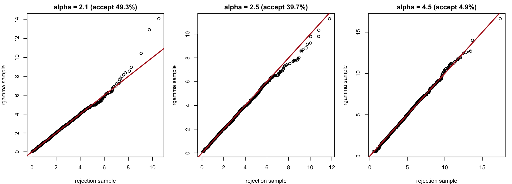
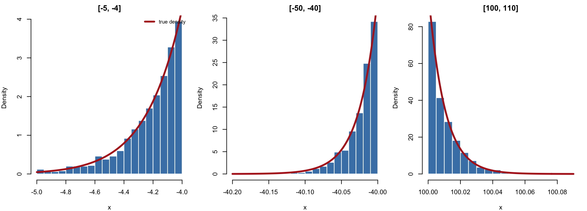
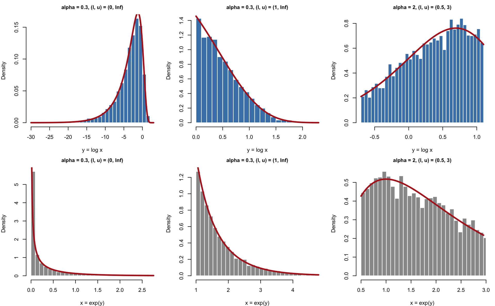

Code
library(ars)library(ars)Monte Carlo integration estimates \(E_f[a(\theta)] = \int a(\theta) f(\theta)\,d\theta\) from iid draws \(\theta_1,\ldots,\theta_n \sim f\). The catch is the sampling step itself: R has built-in samplers for standard families, but a posterior \(f(\theta) \propto L(\theta)\pi(\theta)\) is typically known only up to a constant, and there is no generic way to draw from it directly. Rejection sampling solves this by producing exact iid draws from \(f\) using draws from an easier distribution \(g\), following the recipe reject, reweight, repeat.
Suppose we can find a function \(g(x)\) such that
Neither \(f\) nor \(g\) needs to be normalized: \(f\) may be an unnormalized posterior with unknown area \(A_f = \int f(x)\,dx\), and \(g\) a scaled density \(M\,g_0(x)\) for a sampler \(g_0\) we already have. We will see that the acceptance rate of the algorithm is \(A_f/A_g\). So the design problem is finding a \(g\) that is both easy to sample and close to \(f\).
Rejection sampling rests on one fact about points spread uniformly under the graph of a function. For a function \(h \ge 0\) with finite area \(A_h = \int h(x)\,dx\), write the region under its graph as \[ S_h = \{(x, v): 0 < v < h(x)\}. \] The area of \(S_h\) is \(A_h\), so a point \((X, V)\) uniform on \(S_h\) has joint density \(1/A_h\) on \(S_h\) and \(0\) elsewhere.
Theorem 10.1 (Uniform under a curve) Let \(h \ge 0\) with \(0 < A_h = \int h(x)\,dx < \infty\).
If \((X, V)\) is uniform on \(S_h\), then the marginal density of \(X\) is \(h(x)/A_h\).
Conversely, if \(X\) has density \(h(x)/A_h\) and, given \(X\), \(V \sim \text{Unif}(0, h(X))\), then \((X, V)\) is uniform on \(S_h\).
Proof.
Integrate the joint density over \(v\). For fixed \(x\), the point \((x, v)\) lies in \(S_h\) exactly when \(0 < v < h(x)\), so \[ p_X(x) = \int_0^{h(x)} \frac{1}{A_h}\,dv = \frac{h(x)}{A_h}. \]
The joint density is the marginal of \(X\) times the conditional of \(V\) given \(X\): \[ p(x, v) = \frac{h(x)}{A_h}\cdot\frac{1}{h(x)}\,\mathbb{1}\{0<v<h(x)\} = \frac{1}{A_h}\,\mathbb{1}\{(x, v) \in S_h\}, \] which is the uniform density on \(S_h\).
Part (a) says the density of \(X\) at \(x\) is proportional to the height of the region at \(x\): a tall column holds more points than a short one. Part (b) gives a way to fill \(S_h\) uniformly using a sampler for \(h/A_h\). Figure 10.1 illustrates both parts with the Laplace-shaped function \(g(x) = e^{1/2-|x|}\), which has area \(A_g = 2e^{1/2}\).
g_demo <- function(x) exp(0.5 - abs(x))
A_g <- 2 * exp(0.5) # area under g
xs <- seq(-6, 6, length.out = 500)
### sampler for the normalized g, a Laplace(0, 1) density, by inverse CDF
rlaplace <- function(n) { u <- runif(n); ifelse(u < 0.5, log(2 * u), -log(2 * (1 - u))) }
set.seed(2)
### part (a): uniform points in a box, kept if under g
nb <- 30000
xb <- runif(nb, -6, 6); vb <- runif(nb, 0, exp(0.5))
keep <- vb < g_demo(xb); xa <- xb[keep]; va <- vb[keep]
### part (b): X ~ g / A_g, then V | X ~ Unif(0, g(X))
nshow <- 800
xr <- rlaplace(nshow); vr <- runif(nshow) * g_demo(xr)
par(mfrow = c(1, 3), mar = c(4, 4, 2.2, 1))
plot(xs, g_demo(xs), type = "l", lwd = 3, col = "steelblue", ylim = c(0, 1.7),
xlab = "x", ylab = "v", main = "(a) uniform on S_g, from a box")
points(xa[1:nshow], va[1:nshow], pch = 19, cex = 0.45, col = adjustcolor("black", 0.6))
hist(xa, breaks = seq(-6, 6, by = 0.3), freq = FALSE, col = "grey75", border = "white",
xlab = "x", main = "(a) histogram of X vs g(x) / A_g")
lines(xs, g_demo(xs) / A_g, lwd = 3, col = "steelblue")
plot(xs, g_demo(xs), type = "l", lwd = 3, col = "steelblue", ylim = c(0, 1.7),
xlab = "x", ylab = "v", main = "(b) X ~ g / A_g, V | X ~ Unif(0, g(X))")
points(xr, vr, pch = 19, cex = 0.45, col = adjustcolor("black", 0.6))
Form 1 (ratio form). For each draw needed, repeat until acceptance:
Form 2 (geometric form). For each draw needed, repeat until acceptance:
The two forms are the same algorithm, since with \(V = U\,g(X)\), \[ V < f(X) \iff U < \frac{f(X)}{g(X)}. \] Form 1 is how the sampler is usually coded. Form 2 explains why it works, as shown next. Both evaluate \(f\) and \(g\) only at the proposed point, so unknown normalizing constants in \(f\) (and in \(g\)) do not matter, as long as the functions actually used satisfy \(g \ge f\).
By part (b) of Theorem 10.1, steps 1–2 of Form 2 make \((X, V)\) uniform on \(S_g\). Because \(g \ge f\), the region \(S_f\) lies inside \(S_g\). Step 3 keeps the point only when it lands in \(S_f\). So for any set \(B \subseteq S_f\), \[ P\{(X, V) \in B \mid \text{accept}\} = \frac{P\{(X, V) \in B\}}{P\{(X, V) \in S_f\}} = \frac{\text{area}(B)/A_g}{A_f/A_g} = \frac{\text{area}(B)}{A_f}. \] This says a retained \((X, V)\) is uniform on \(S_f\). By part (a) of Theorem 10.1 with \(h = f\), the retained \(X\) has density \(f(x)/A_f\), the normalized target. The draw is exact, not approximate.
The same calculation gives the cost. Each proposal is accepted with probability \[ P(\text{accept}) = P\{(X, V) \in S_f\} = \frac{A_f}{A_g}, \] the ratio of the two areas. Proposals are independent, so the number needed per accepted draw is geometric with mean \(A_g/A_f\). A tight envelope wastes few proposals and a loose one wastes many.
Figure 10.2 shows the whole picture for the standard normal target \(f(x) = e^{-x^2/2}\) under the same Laplace envelope \(g\). Here \(A_f = \sqrt{2\pi} \approx 2.507\) and \(A_g = 2e^{1/2} \approx 3.297\), so about \(76\%\) of proposals are accepted.
f_demo <- function(x) exp(-x^2 / 2)
xs <- seq(-6, 6, length.out = 500)
par(mfrow = c(1, 2), mar = c(4, 4, 2, 1))
plot(xs, g_demo(xs), type = "n", ylim = c(0, 1.75), xlab = "x", ylab = "")
polygon(c(xs, rev(xs)), c(g_demo(xs), rep(0, 500)), col = adjustcolor("steelblue", 0.3), border = NA)
polygon(c(xs, rev(xs)), c(f_demo(xs), rep(0, 500)), col = adjustcolor("firebrick", 0.4), border = NA)
lines(xs, g_demo(xs), col = "steelblue", lwd = 3); lines(xs, f_demo(xs), col = "firebrick", lwd = 3)
legend("topright", bty = "n", fill = adjustcolor(c("steelblue", "firebrick"), 0.35), border = NA,
legend = c("area under envelope g", "area under target f"))
set.seed(1)
N <- 600
xp <- rlaplace(N); vp <- runif(N) * g_demo(xp); acc <- vp < f_demo(xp)
plot(xs, g_demo(xs), type = "l", lwd = 3, col = "steelblue", ylim = c(0, 1.75), xlab = "x", ylab = "v")
lines(xs, f_demo(xs), lwd = 3, col = "firebrick")
points(xp[!acc], vp[!acc], pch = 4, col = adjustcolor("gray40", 0.7), cex = 0.7)
points(xp[acc], vp[acc], pch = 19, col = adjustcolor("firebrick", 0.7), cex = 0.7)
legend("topright", bty = "n", pch = c(19, 4), col = c("firebrick", "gray40"),
legend = c(sprintf("accepted (%d)", sum(acc)), sprintf("rejected (%d)", sum(!acc))))
The figure above already uses a concrete, closed-form example worth stating in full, because it is simple enough to check every claim exactly.
Target. The unnormalized standard normal density \[ f(x) = e^{-x^2/2}, \qquad x \in \mathbb{R}, \qquad A_f = \sqrt{2\pi}. \]
Envelope. A scaled Laplace (double-exponential) density \[
g(x) = e^{1/2 - |x|} = 2e^{1/2}\,g_0(x), \qquad g_0(x) = \tfrac12 e^{-|x|},
\qquad A_g = 2e^{1/2}.
\] The normalized envelope \(g_0\) is the standard Laplace density, which is sampled by inversion (rlaplace above).
Proof. \(g \ge f\) for every \(x\). Compare the logs: \[ \log g(x) - \log f(x) = \tfrac12 - |x| + \tfrac{x^2}{2} = \tfrac12\big(|x|^2 - 2|x| + 1\big) = \tfrac12\big(|x| - 1\big)^2 \ \ge\ 0, \] with equality exactly at \(|x| = 1\), where the two curves in the figure touch. The constant \(e^{1/2}\) is the smallest that works: with \(e^{a - |x|}\) the gap is \(\tfrac12(|x|-1)^2 + a - \tfrac12\), which is negative at \(|x| = 1\) when \(a < \tfrac12\).
The exact acceptance rate is \[ P(\text{accept}) = \frac{\int f(x)\,dx}{\int g(x)\,dx} = \frac{\sqrt{2\pi}}{2e^{1/2}} \approx 0.760. \]
rnorm_reject <- function(n) {
out <- numeric(0); tries <- 0
while (length(out) < n) {
m <- n - length(out)
x <- rlaplace(m); tries <- tries + m
out <- c(out, x[runif(m) < f_demo(x) / g_demo(x)])
}
list(x = out, acceptance = n / tries)
}
set.seed(2)
res <- rnorm_reject(2e5)
knitr::kable(data.frame(
quantity = c("acceptance rate", "sample mean", "sample sd"),
theoretical = c(sqrt(2 * pi) / (2 * sqrt(exp(1))), 0, 1),
simulated = c(res$acceptance, mean(res$x), sd(res$x))
), digits = 4)| quantity | theoretical | simulated |
|---|---|---|
| acceptance rate | 0.7602 | 0.7595 |
| sample mean | 0.0000 | 0.0031 |
| sample sd | 1.0000 | 0.9991 |
Roughly 3 in 4 proposals are kept — a tight, efficient envelope, and the benchmark against which the next example’s Cauchy envelope should be judged.
A shinylive app shows how the tightness of the envelope determines the efficiency of rejection sampling: a looser envelope still gives exact draws but rejects more of them.
The Laplace envelope above was designed to match a normal target. A different target needs a different envelope. Here is one built for \(\text{Gamma}(\alpha, 1)\) with \(\alpha > 1\). Write \(m = \alpha - 1 > 0\) for the mode and \(c = 2\alpha - 1 = 2m + 1\).
Target. The unnormalized Gamma density (the kernel, without \(1/\Gamma(\alpha)\)) \[ f(x) = x^{\alpha-1}e^{-x} = x^m e^{-x}, \qquad x > 0, \] with area \(A_f = \Gamma(\alpha)\) and maximum \(f(m) = m^m e^{-m}\) at the mode.
Envelope. A Cauchy-shaped curve centred at the mode, scaled to touch \(f\) there: \[
g(x) = \frac{m^m e^{-m}}{1 + (x - m)^2/c}, \qquad x \in \mathbb{R}.
\] Normalized, \(g\) is the density of \(m + \sqrt{c}\,C\) with \(C\) standard Cauchy, so sampling \(g\) needs only rcauchy. Its area is \(A_g = m^m e^{-m}\,\pi\sqrt{c}\). The heavy Cauchy tails, decaying like \(x^{-2}\), are what let \(g\) stay above the exponentially decaying \(f\) for large \(x\). A normal-shaped envelope would eventually fall below it.
Proof. \(g \ge f\) for every \(x > 0\). For \(x \le 0\) there is nothing to show, since \(f = 0\) there. For \(x > 0\) consider the log gap \[ D(x) = \log g(x) - \log f(x) = m\log m - m - \log\!\Big(1 + \frac{(x-m)^2}{c}\Big) - m\log x + x. \] Clearly \(D(m) = 0\). Differentiating, \[ D'(x) = 1 - \frac{m}{x} - \frac{2(x-m)}{c + (x-m)^2} = (x - m)\left[\frac{1}{x} - \frac{2}{c + (x-m)^2}\right] = \frac{(x-m)\,\big[c + (x-m)^2 - 2x\big]}{x\,\big(c + (x-m)^2\big)}. \] With \(c = 2m + 1\) the bracket is a perfect square: \(c + (x-m)^2 - 2x = (x-m)^2 - 2(x-m) + 1 = (x - m - 1)^2 \ge 0\). So \[ D'(x) = \frac{(x-m)(x-m-1)^2}{x\,\big(c + (x-m)^2\big)}, \] which has the sign of \(x - m\). Hence \(D\) decreases on \((0, m)\) and increases on \((m, \infty)\), its minimum is \(D(m) = 0\), and \(D(x) \ge 0\), i.e. \(g(x) \ge f(x)\), for all \(x > 0\). This also shows where the scale \(c = 2\alpha - 1\) comes from: it is the value that turns the bracket into a square.
The acceptance rate is therefore \[ P(\text{accept}) = \frac{A_f}{A_g} = \frac{\Gamma(\alpha)}{\pi\sqrt{2\alpha-1}\;(\alpha-1)^{\alpha-1}e^{-(\alpha-1)}}. \] It is \(e/(\pi\sqrt 3) \approx 0.50\) at \(\alpha = 2\), and by Stirling’s formula it rises to \(1/\sqrt{\pi} \approx 0.564\) as \(\alpha \to \infty\).
### log Gamma kernel f(x) = x^(alpha-1) exp(-x), without 1/Gamma(alpha)
log_f_gamma <- function(x, alpha) (alpha - 1) * log(x) - x
### log of the Cauchy-shaped envelope g, which touches f at the mode alpha - 1
log_g_gamma <- function(x, alpha) {
(alpha - 1) * (log(alpha - 1) - 1) - log(1 + (x - (alpha - 1))^2 / (2 * alpha - 1))
}The proof uses the unnormalized \(f\), and this matters. Up to a constant, log_g_gamma is the log-density of \(m + \sqrt{c}\,C\):
x_check <- seq(0.1, 10, by = 0.37)
alpha_check <- 3.3
log_f_Y <- dcauchy((x_check - (alpha_check - 1)) / sqrt(2 * alpha_check - 1), log = TRUE) -
log(sqrt(2 * alpha_check - 1))
range(log_g_gamma(x_check, alpha_check) - log_f_Y) # constant across x confirms the claim[1] 1.621804 1.621804Table 10.2 computes the minimum gap \(\min_x \{\log g(x) - \log f(x)\}\) on a fine grid, both for the kernel \(f\) used in the proof and for the normalized density dgamma \(= f/\Gamma(\alpha)\).
alphas_check <- c(1.1, 1.5, 1.9, 2.0, 2.5, 3, 4.5, 10)
xv <- seq(1e-6, 60, length.out = 2e4)
gap_kernel <- vapply(alphas_check, function(a) min(log_g_gamma(xv, a) - log_f_gamma(xv, a)), numeric(1))
gap_dgamma <- vapply(alphas_check, function(a) min(log_g_gamma(xv, a) - dgamma(xv, a, log = TRUE)), numeric(1))
knitr::kable(data.frame(alpha = alphas_check, gap_kernel = gap_kernel, gap_dgamma = gap_dgamma),
digits = 5, col.names = c("alpha", "min gap vs kernel f", "min gap vs dgamma"))| alpha | min gap vs kernel f | min gap vs dgamma |
|---|---|---|
| 1.1 | 0 | -0.04987 |
| 1.5 | 0 | -0.12078 |
| 1.9 | 0 | -0.03898 |
| 2.0 | 0 | 0.00000 |
| 2.5 | 0 | 0.28468 |
| 3.0 | 0 | 0.69315 |
| 4.5 | 0 | 2.45374 |
| 10.0 | 0 | 12.80183 |
The gap against the kernel is \(0\) for every \(\alpha\), attained at the mode, exactly as the proof says. Against dgamma it equals \(-\log\Gamma(\alpha)\). That is negative for \(1 < \alpha < 2\), so \(g\) would not cover the normalized density there. For \(\alpha > 2\) it is positive, so \(g\) still covers it but with a wasted factor \(\Gamma(\alpha)\), and the acceptance rate drops to \(1/A_g\) instead of \(\Gamma(\alpha)/A_g\). The lesson is the one stated with the algorithm: the inequality \(g \ge f\) must hold for the functions actually used in the ratio \(f/g\). Here the right choice is the kernel, which needs no \(\Gamma(\alpha)\) at all.
A batch-and-refill implementation is both clearer and much faster than drawing one candidate at a time in an R loop: generate a vector of candidates, vectorize the accept/reject test, keep the survivors, and top up only the shortfall.
sample_gamma_rej <- function(n, alpha, max_tries = 2e6) {
out <- numeric(0); tries <- 0
while (length(out) < n) {
if (tries > max_tries) stop("acceptance rate too low: envelope is too loose")
m <- n - length(out)
x <- rcauchy(m) * sqrt(2 * alpha - 1) + (alpha - 1)
tries <- tries + m
x <- x[x > 0] # f = 0 for x <= 0: always rejected
keep <- log(runif(length(x))) < log_f_gamma(x, alpha) - log_g_gamma(x, alpha)
out <- c(out, x[keep])
}
structure(out[seq_len(n)], accept.rate = n / tries)
}acc_theory <- function(a) exp(lgamma(a) - log(pi) - 0.5 * log(2 * a - 1) - (a - 1) * (log(a - 1) - 1))
set.seed(3)
alphas_test <- c(1.2, 2.5, 4.5, 20)
gamma_tests <- lapply(alphas_test, function(a) sample_gamma_rej(2000, a))
knitr::kable(data.frame(
alpha = alphas_test,
accept_theory = acc_theory(alphas_test),
accept_rate = vapply(gamma_tests, attr, numeric(1), "accept.rate"),
ks_stat = mapply(function(x, a) suppressWarnings(ks.test(x, "pgamma", a))$statistic,
gamma_tests, alphas_test)
), digits = 4, col.names = c("alpha", "exact acceptance", "simulated acceptance",
"KS statistic vs true Gamma"))| alpha | exact acceptance | simulated acceptance | KS statistic vs true Gamma |
|---|---|---|---|
| 1.2 | 0.4163 | 0.4195 | 0.0201 |
| 2.5 | 0.5161 | 0.5315 | 0.0160 |
| 4.5 | 0.5404 | 0.5414 | 0.0150 |
| 20.0 | 0.5594 | 0.5534 | 0.0150 |
par(mfrow = c(1, 3), mar = c(4, 4, 2, 1))
for (i in 1:3) {
a <- alphas_test[i]
qqplot(gamma_tests[[i]], rgamma(2000, a), xlab = "rejection sample", ylab = "rgamma sample",
main = sprintf("alpha = %g (accept %.1f%%)", a, 100 * attr(gamma_tests[[i]], "accept.rate")))
abline(0, 1, col = "firebrick", lwd = 2)
}
The Q-Q plots confirm exactness at every \(\alpha\): rejection sampling never trades accuracy for speed, only speed changes. About half of all proposals are rejected for any \(\alpha\), so this envelope is less efficient than the Laplace envelope of Example 1. Efficient random-number generators for the Gamma distribution (as used inside rgamma itself) use envelopes that are much tighter; see Marsaglia & Tsang (2000, ACM TOMS) for the algorithm R actually uses.
There is a shinylive app to show how the efficiency of rejection sampling for the Gamma distribution changes with the shape parameter while the draws remain exact.
Designing an envelope by hand, as above, is the hard part of rejection sampling. For a broad and important class of targets it can be automated.
A density \(f\) is log-concave if \(\log f(x)\) is concave. Many posteriors are: the normal, the gamma with shape \(\ge 1\), the beta with both parameters \(\ge 1\), logistic-regression posteriors under normal priors, and any product of log-concave factors (so most conjugate and many non-conjugate exponential- family posteriors qualify).
A concave function lies below every one of its tangent lines. So for tangent lines \(\ell_1,\ldots,\ell_k\) to \(\log f\) at points \(x_1 < \cdots < x_k\), the piecewise-linear upper hull \[ \log g(x) = \min_j \ell_j(x) \] satisfies \(\log g \ge \log f\) everywhere, hence \(g = e^{\log g} \ge f\): a valid envelope, built automatically from a handful of tangent points and their slopes (the log-density’s derivative), with no hand-crafted formula. Because \(g\) is piecewise-exponential, both its normalizing integral and its inverse CDF are closed-form on each piece, so sampling from \(g\) is cheap.
Proof. The tangent-line inequality. Let \(h = \log f\) be concave and differentiable on an interval, and let \(x_j\) and \(x\) be two points in it. For \(t \in (0, 1]\), concavity gives \(h\big(x_j + t(x - x_j)\big) \ge (1-t)\,h(x_j) + t\,h(x)\), which rearranges to \[ \frac{h\big(x_j + t(x - x_j)\big) - h(x_j)}{t} \ \ge\ h(x) - h(x_j). \] Letting \(t \to 0\), the left side tends to \(h'(x_j)(x - x_j)\), so \(h(x) \le h(x_j) + h'(x_j)(x - x_j) = \ell_j(x)\). This holds for every \(j\), so \(h(x) \le \min_j \ell_j(x) = \log g(x)\) and \(f \le g\).
Adaptive rejection sampling (Gilks & Wild, 1992) refines the hull as it goes:
Each rejection adds a tangent exactly where the envelope was loose, so the acceptance rate rises toward \(1\) as sampling proceeds — the envelope adapts itself to the target instead of being fixed in advance. Only \(\log f\) and its derivative are required (a derivative-free variant uses secants in place of tangents). The ars package implements this for any user-supplied log-concave f.
The standard normal is log-concave (\(\log f(x) = -x^2/2\) is concave), and truncating to \([l, u]\) only shrinks the domain — it cannot break concavity — so a truncated normal is log-concave too, and ars applies to it directly. Explicitly, for \(l < u\) (either may be infinite):
Target. \[ f(x) = e^{-x^2/2}\,\mathbb{1}\{l < x < u\}, \qquad h(x) = \log f(x) = -\tfrac{x^2}{2} \ \text{ on } (l, u). \]
Envelope (ARS). With tangent points \(x_1 < \cdots < x_k\) in \([l, u]\), the tangent at \(x_j\) is \[ \ell_j(x) = -\tfrac{x_j^2}{2} - x_j(x - x_j) = \tfrac{x_j^2}{2} - x_j x. \] Adjacent tangents \(\ell_j\) and \(\ell_{j+1}\) cross where \(\tfrac{x_j^2}{2} - x_j z = \tfrac{x_{j+1}^2}{2} - x_{j+1} z\), that is, at the midpoint \[ z_j = \frac{x_j + x_{j+1}}{2}, \qquad j = 1, \ldots, k-1. \] The envelope uses tangent \(j\) between \(z_{j-1}\) and \(z_j\), with \(z_0 = l\) and \(z_k = u\): \[ g(x) = \begin{cases} \exp\big\{\tfrac{x_1^2}{2} - x_1 x\big\}, & l < x \le z_1, \\[4pt] \exp\big\{\tfrac{x_2^2}{2} - x_2 x\big\}, & z_1 < x \le z_2, \\[4pt] \qquad\vdots & \qquad\vdots \\[4pt] \exp\big\{\tfrac{x_k^2}{2} - x_k x\big\}, & z_{k-1} < x < u. \end{cases} \] Each piece is an exponential function of \(x\), so \(g\) is easy to integrate and to sample piece by piece.
Proof. \(g \ge f\). On the piece \(z_{j-1} < x \le z_j\), \(\log g(x) = \ell_j(x)\), and \[ \ell_j(x) - h(x) = \tfrac{x_j^2}{2} - x_j x + \tfrac{x^2}{2} = \tfrac12 (x - x_j)^2 \ \ge\ 0. \] So \(\log g \ge h\) on every piece, i.e. \(g \ge f\) on \((l, u)\). This is the tangent-line inequality above, verified directly. (This \(g\) is the same as the hull \(\min_j \ell_j\): since \(\ell_j(x) - \ell_{j+1}(x) = (x_{j+1} - x_j)(x - z_j)\), tangent \(j\) lies below tangent \(j+1\) exactly when \(x \le z_j\), so on each piece the tangent in use is the lowest one.)
This makes it a clean test case for comparing ARS against the most obvious alternative: sample the untruncated \(N(0,1)\) and throw away anything outside \([l, u]\). That naive sampler is itself a (trivial) rejection sampler, with envelope \(g(x) = e^{-x^2/2}\) on all of \(\mathbb{R}\). Here \(g \ge f\) because \(f = g\cdot\mathbb{1}\{l<x<u\}\), and the ratio \(f/g\) is \(1\) inside \((l, u)\) and \(0\) outside, so “accept if \(U < f/g\)” just means “keep \(x\) if it lands in \((l, u)\)”. It is exactly correct — but its acceptance rate is just \(P(l<Z<u)\), which collapses to essentially \(0\) once \([l, u]\) sits out in the tail. ARS has no such weakness: its hull is built from the truncated target from the start, so it never proposes a point outside \([l, u]\) in the first place, and its acceptance rate stays high regardless of where the window sits.
### direct rejection sampling for a truncated normal: draw from N(0,1),
### keep values inside [lb, ub]; vectorized batch-and-refill
sample_tnorm_drs <- function(n, lb = -Inf, ub = Inf) {
out <- numeric(0)
while (length(out) < n) {
x <- rnorm(n - length(out))
out <- c(out, x[x >= lb & x <= ub])
}
out
}
### adaptive rejection sampling via the ars package
sample_tnorm_ars <- function(n, lb, ub) {
logf <- function(x) dnorm(x, log = TRUE)
fprima <- function(x) -x
ars(n, f = logf, fprima = fprima, x = c(lb, (lb + ub) / 2, ub),
lb = TRUE, ub = TRUE, xlb = lb, xub = ub)
}set.seed(4)
n <- 1000
windows <- list(c(-5, -4), c(-50, -40), c(100, 110))
timing <- lapply(windows, function(w) {
t_ars <- system.time(sample_tnorm_ars(n, w[1], w[2]))["elapsed"]
t_naive <- if (w[1] > -10 && w[2] < 10) system.time(sample_tnorm_drs(n, w[1], w[2]))["elapsed"] else NA
c(lb = w[1], ub = w[2], ars_seconds = t_ars, naive_seconds = t_naive)
})
knitr::kable(do.call(rbind, timing), digits = 4,
col.names = c("lower bound", "upper bound", "ars (s)", "naive rejection (s)"))| lower bound | upper bound | ars (s) | naive rejection (s) |
|---|---|---|---|
| -5 | -4 | 0.002 | 1.076 |
| -50 | -40 | 0.005 | NA |
| 100 | 110 | 0.002 | NA |
For \([-50,-40]\) or \([100,110]\) the naive sampler’s acceptance probability is astronomically small (\(P(-50<Z<-40) \approx 10^{-221}\)), so it is left as NA rather than run to timeout; ars samples these windows in a fraction of a second because its envelope is built from the truncated density itself, never from the untruncated normal.
### log(pnorm(ub) - pnorm(lb)), numerically stable even when the naive
### difference underflows to 0 for windows far out in either tail
log_pnorm_diff <- function(lb, ub) {
if (ub <= 0) {
log_pu <- pnorm(ub, log.p = TRUE); log_pl <- pnorm(lb, log.p = TRUE)
log_pu + log1p(-exp(log_pl - log_pu))
} else if (lb >= 0) {
log_su <- pnorm(ub, lower.tail = FALSE, log.p = TRUE)
log_sl <- pnorm(lb, lower.tail = FALSE, log.p = TRUE)
log_sl + log1p(-exp(log_su - log_sl))
} else {
log(pnorm(ub) - pnorm(lb))
}
}
tnorm_density <- function(x, lb, ub) exp(dnorm(x, log = TRUE) - log_pnorm_diff(lb, ub))
par(mfrow = c(1, 3), mar = c(4, 4, 2, 1))
set.seed(5)
for (w in windows) {
x <- sample_tnorm_ars(n, w[1], w[2])
hist(x, breaks = 25, freq = FALSE, col = "steelblue", border = "white",
main = sprintf("[%g, %g]", w[1], w[2]), xlab = "x")
curve(tnorm_density(x, w[1], w[2]), add = TRUE, lwd = 3, col = "firebrick", n = 300)
if (identical(w, windows[[1]])) {
legend("topright", bty = "n", lwd = 3, col = "firebrick", cex = 0.8,
legend = "true density")
}
}
A shinylive app runs this truncated normal example step by step. It shows how adaptive rejection sampling improves its envelope automatically, so that it becomes more efficient as sampling proceeds.
The Gamma\((\alpha, 1)\) log density \((\alpha-1)\log x - x\) has second derivative \(-(\alpha-1)/x^2\), so it is concave only when \(\alpha \ge 1\). For \(\alpha < 1\) the density is not log-concave (it rises to \(\infty\) at \(x=0\)) and ARS cannot be applied to \(X\) directly. A change of variable fixes this. Let \(Y = \log X\). By the Jacobian \(dx/dy = e^y\), \(Y\) has density \[ f_Y(y) \propto \exp\{h(y)\}, \qquad h(y) = \alpha y - e^y, \] with \(h'(y) = \alpha - e^y\) and \(h''(y) = -e^y < 0\). So \(\log f_Y\) is concave for every \(\alpha > 0\).
Target. For \(X\) truncated to \((l, u)\), with \(a = \log l\) and \(b = \log u\) (so \(a = -\infty\) when \(l = 0\) and \(b = \infty\) when \(u = \infty\)), \[ f(y) = \exp\{\alpha y - e^y\}\,\mathbb{1}\{a < y < b\}. \]
Envelope (ARS). With tangent points \(y_1 < \cdots < y_k\) in \((a, b)\), the tangent at \(y_j\) is \[ \ell_j(y) = h(y_j) + h'(y_j)(y - y_j) = (\alpha - e^{y_j})\,y + e^{y_j}(y_j - 1), \] using \(h(y_j) - y_j h'(y_j) = e^{y_j}(y_j - 1)\). Adjacent tangents \(\ell_j\) and \(\ell_{j+1}\) cross at \[ z_j = \frac{e^{y_{j+1}}(y_{j+1} - 1) - e^{y_j}(y_j - 1)}{e^{y_{j+1}} - e^{y_j}}, \qquad j = 1, \ldots, k-1. \] The envelope uses tangent \(j\) between \(z_{j-1}\) and \(z_j\), with \(z_0 = a\) and \(z_k = b\): \[ g(y) = \begin{cases} \exp\big\{(\alpha - e^{y_1})\,y + e^{y_1}(y_1 - 1)\big\}, & a < y \le z_1, \\[4pt] \exp\big\{(\alpha - e^{y_2})\,y + e^{y_2}(y_2 - 1)\big\}, & z_1 < y \le z_2, \\[4pt] \qquad\vdots & \qquad\vdots \\[4pt] \exp\big\{(\alpha - e^{y_k})\,y + e^{y_k}(y_k - 1)\big\}, & z_{k-1} < y < b. \end{cases} \] Each piece is an exponential function of \(y\). If \(a = -\infty\), the first piece must rise with slope \(\alpha - e^{y_1} > 0\), i.e. \(y_1 < \log\alpha\), so that \(g\) decays to the left. If \(b = \infty\), the last piece must fall, i.e. \(y_k > \log\alpha\). Otherwise \(g\) has infinite area and cannot be normalized.
Proof. \(g \ge f\). On the piece \(z_{j-1} < y \le z_j\), \(\log g(y) = \ell_j(y)\), and \[ \ell_j(y) - h(y) = e^{y} - e^{y_j} - e^{y_j}(y - y_j) = e^{y_j}\big(e^{t} - 1 - t\big), \qquad t = y - y_j, \] which is \(\ge 0\) because \(e^t \ge 1 + t\) for all \(t\). So \(\log g \ge h\) on every piece, i.e. \(g \ge f\) on \((a, b)\). (As in Example 3, this \(g\) is the same as the hull \(\min_j \ell_j\): since \(\ell_j(y) - \ell_{j+1}(y) = (e^{y_{j+1}} - e^{y_j})(y - z_j)\), tangent \(j\) lies below tangent \(j+1\) exactly when \(y \le z_j\).)
ARS can sample \(Y\), and \(X = e^Y\) is then an exact Gamma draw. Truncating \(X\) to \((l, u)\) just truncates \(Y\) to \((\log l, \log u)\), which keeps \(h\) concave. With \(l = 0\) the lower end is \(-\infty\), and the left tail of \(Y\) is long when \(\alpha\) is small: \(h(y) \approx \alpha y\) there, an exponential tail with the slow rate \(\alpha\).
It is worth writing ARS out in full here. The ars package fails on this target when \(\alpha < 1\). For \(\alpha = 0.3\) its draws of \(\log X\) have mean about \(-5.3\) (over several seeds) instead of the true \(E(\log X) =
\psi(0.3) = -3.50\), where \(\psi\) is the digamma function. For \(\alpha = 0.05\) it prints repeated internal errors (ifault = 5) and still returns biased draws. Both problems seem to come from the long, nearly linear left tail of \(h\). The sampler below follows the three steps of the adaptive algorithm above. Every rejected point becomes a new tangent. All areas and inverse CDFs are computed on the log scale, so a piece with very little mass cannot overflow or underflow. The squeeze test is left out for clarity, so every proposal costs one evaluation of \(h\).
### tangent-line hull for a concave h on (a, b); a = -Inf and/or b = Inf allowed.
### z holds the piece boundaries: a, the tangent intersections, b
build_hull <- function(ys, h, hprime, a, b) {
ys <- sort(unique(ys)); hy <- h(ys); hpy <- hprime(ys); k <- length(ys)
z <- c(a, numeric(k - 1), b)
for (i in seq_len(k - 1))
z[i + 1] <- (hy[i + 1] - hy[i] - ys[i + 1] * hpy[i + 1] + ys[i] * hpy[i]) /
(hpy[i] - hpy[i + 1])
list(x = ys, hx = hy, hp = hpy, z = z)
}
### hull value at the two ends of each piece (-Inf at an infinite end,
### where the tangent slopes downhill), and log area under exp(piece)
piece_ends <- function(hull) {
k <- length(hull$x)
lo <- hull$hx + hull$hp * (hull$z[1:k] - hull$x)
hi <- hull$hx + hull$hp * (hull$z[2:(k + 1)] - hull$x)
lo[is.infinite(hull$z[1:k])] <- -Inf; hi[is.infinite(hull$z[2:(k + 1)])] <- -Inf
cbind(lo, hi)
}
log_areas <- function(hull, v) {
m <- pmax(v[, 1], v[, 2]); d <- pmin(v[, 1], v[, 2])
flat <- abs(hull$hp) < 1e-10
ifelse(flat, v[, 1] + log(diff(hull$z)), m + log1p(-exp(d - m)) - log(abs(hull$hp)))
}
### one draw from the normalized envelope: pick a piece in proportion to its
### area, then invert that piece's exponential CDF (on the log scale)
sample_hull <- function(hull) {
v <- piece_ends(hull); la <- log_areas(hull, v)
j <- sample.int(length(la), 1, prob = exp(la - max(la)))
U <- runif(1)
if (abs(hull$hp[j]) < 1e-10) {
y <- hull$z[j] + U * (hull$z[j + 1] - hull$z[j]); logg <- hull$hx[j]
} else {
m <- max(v[j, ])
logg <- m + log((1 - U) * exp(v[j, 1] - m) + U * exp(v[j, 2] - m))
y <- hull$x[j] + (logg - hull$hx[j]) / hull$hp[j]
}
c(y = unname(y), logg = unname(logg))
}
### ARS for Y = log X, X ~ Gamma(alpha, 1) truncated to (l, u):
### h(y) = alpha*y - exp(y) is concave for every alpha > 0
ars_loggamma <- function(n, alpha, l = 0, u = Inf) {
a <- log(l); b <- log(u); m <- log(alpha) # m = mode of h
h <- function(y) alpha * y - exp(y)
hprime <- function(y) alpha - exp(y)
### starting points: an infinite end needs a tangent sloping downhill
### towards it, i.e. a point left of the mode if a = -Inf, right if b = Inf
lo <- if (is.finite(a)) a else min(b, m) - 1
hi <- if (is.finite(b)) b else max(a, m) + 1
hull <- build_hull(lo + (hi - lo) * c(0.1, 0.5, 0.9), h, hprime, a, b)
y <- numeric(n); got <- 0; proposed <- 0
while (got < n) {
d <- sample_hull(hull); proposed <- proposed + 1
if (log(runif(1)) <= h(d["y"]) - d["logg"]) {
got <- got + 1; y[got] <- d["y"]
} else { # rejected: add a tangent there
hull <- build_hull(c(hull$x, d["y"]), h, hprime, a, b)
}
}
list(x = exp(y), y = y, accept = n / proposed, tangents = length(hull$x))
}Table 10.5 checks the sampler on shapes well below and above \(1\), with and without truncation. The true truncated mean comes from the identity \(x\,\text{dgamma}(x;\alpha) = \alpha\,\text{dgamma}(x;\alpha+1)\), which gives \[ E(X \mid l < X < u) = \alpha\,\frac{P_{\alpha+1}(l, u)}{P_\alpha(l, u)}, \qquad P_\alpha(l, u) = P(l < X < u),\ X \sim \text{Gamma}(\alpha, 1). \]
### P(l < X < u) for X ~ Gamma(alpha, 1)
p_trunc <- function(alpha, l, u) pgamma(u, alpha) - pgamma(l, alpha)
lg_cases <- list(c(0.05, 0, Inf), c(0.3, 0, Inf), c(0.3, 1, Inf), c(0.5, 0, 2),
c(2, 0.5, 3), c(5, 0, 1), c(1, 15, Inf))
set.seed(11)
lg_tab <- t(sapply(lg_cases, function(cc) {
alpha <- cc[1]; l <- cc[2]; u <- cc[3]
r <- ars_loggamma(5000, alpha, l, u)
F_tr <- function(q) (pgamma(pmin(pmax(q, l), u), alpha) - pgamma(l, alpha)) /
p_trunc(alpha, l, u)
c(alpha = alpha, l = l, u = u, accept = r$accept, tangents = r$tangents,
true_mean = alpha * p_trunc(alpha + 1, l, u) / p_trunc(alpha, l, u),
sample_mean = mean(r$x), ks_p = ks.test(r$x, F_tr)$p.value)
}))
knitr::kable(lg_tab, digits = c(2, 2, 2, 4, 0, 4, 4, 3),
col.names = c("alpha", "l", "u", "acceptance", "tangents",
"true E(X)", "sample mean", "KS p-value"))| alpha | l | u | acceptance | tangents | true E(X) | sample mean | KS p-value |
|---|---|---|---|---|---|---|---|
| 0.05 | 0.0 | Inf | 0.9966 | 20 | 0.0500 | 0.0509 | 0.867 |
| 0.30 | 0.0 | Inf | 0.9956 | 25 | 0.3000 | 0.2979 | 0.465 |
| 0.30 | 1.0 | Inf | 0.9966 | 20 | 1.7583 | 1.7602 | 0.952 |
| 0.50 | 0.0 | 2 | 0.9958 | 24 | 0.3869 | 0.3889 | 0.543 |
| 2.00 | 0.5 | 3 | 0.9972 | 17 | 1.5828 | 1.5839 | 0.745 |
| 5.00 | 0.0 | 1 | 0.9986 | 10 | 0.8118 | 0.8102 | 0.666 |
| 1.00 | 15.0 | Inf | 0.9982 | 12 | 16.0000 | 16.0023 | 0.989 |
Figure 10.5 shows the draws for three of these cases on both scales. On the \(y\) scale every target is a smooth log-concave curve, even for \(\alpha = 0.3\), where the density of \(X\) (bottom left) has a pole at \(0\). Truncation at \(l = 1\) (middle) or to \((0.5, 3)\) (right) only cuts the \(y\)-density at \(\log l\) and \(\log u\).
fig_cases <- list(c(0.3, 0, Inf), c(0.3, 1, Inf), c(2, 0.5, 3))
set.seed(12)
draws <- lapply(fig_cases, function(cc) ars_loggamma(5000, cc[1], cc[2], cc[3]))
lab <- function(cc) sprintf("alpha = %g, (l, u) = (%g, %g)", cc[1], cc[2], cc[3])
par(mfrow = c(2, 3), mar = c(4, 4, 2.2, 1))
for (i in 1:3) {
cc <- fig_cases[[i]]; P <- p_trunc(cc[1], cc[2], cc[3])
hist(draws[[i]]$y, breaks = 30, freq = FALSE, col = "steelblue", border = "white",
main = lab(cc), xlab = "y = log x", cex.main = 0.95)
curve(exp(cc[1] * x - exp(x) - lgamma(cc[1])) / P, add = TRUE, lwd = 3,
col = "firebrick", n = 400)
}
for (i in 1:3) {
cc <- fig_cases[[i]]; P <- p_trunc(cc[1], cc[2], cc[3]); x <- draws[[i]]$x
xmax <- quantile(x, 0.99) # crop the long right tail for display
hist(x, breaks = c(seq(cc[2], xmax, length.out = 30), max(x)), freq = FALSE,
xlim = c(cc[2], xmax), col = "grey60", border = "white",
main = lab(cc), xlab = "x = exp(y)", cex.main = 0.95)
curve(dgamma(x, cc[1]) / P, from = max(cc[2], 1e-3), to = xmax, add = TRUE,
lwd = 3, col = "firebrick", n = 400)
}
There is a shinylive app that runs this sampler one proposal at a time. You choose \(\alpha \in (0, 5]\) and a truncation interval \((l, u)\). The app shows the tangent hull adapting to \(h(y)\), and the histograms of \(Y\) and \(X = e^Y\) filling in. A sidebar table compares the running estimates of \(E(\log X)\) and \(E(X)\) with their exact values.